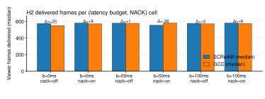

supported
When the link's bandwidth keeps changing, the viewer gets more frames with GCC than with SCReAM, and turning retransmits on or off or tightening the late-frame deadline does not change which one wins.
gcc_delivers_at_least_30_more_median_frames_than_scream_in_every_setting| Outcome | Predicates |
|---|---|
| Supported when all |
gcc_delivers_at_least_30_more_median_frames_than_scream_in_every_setting
|
| Refuted when any |
gcc_does_not_deliver_more_frames_than_scream_in_any_setting
|
| Inconclusive when any |
gcc_delivers_more_frames_in_some_settings_but_not_others
|
GCC leads SCReAM in every tested latency-budget x NACK cell on the fluctuating capacity-step network. Neither deadline enforcement nor retransmission changes the ranking.

| budget_ms | nack | scream_median | gcc_median | delta_scream_minus_gcc |
|---|---|---|---|---|
| 0 | no | 575 | 550.0 | 25.00 |
| 0 | yes | 580 | 571.0 | 9.00 |
| 50 | no | 579 | 578 | 1 |
| 50 | yes | 555 | 581 | -26 |
| 100 | no | 577 | 572.0 | 5.00 |
| 100 | yes | 581 | 575.0 | 6.00 |
H4 experiment — does enforcing an operational latency budget reverse NACK's apparent benefit? 8-arm 2×2×2 over (CC algorithm) × (NACK on/off) × (latency budget 0 ms / 100 ms), all on the same constant network: 5 Mbps + 20 ms + 2% uniform loss for the full 20 s. Constant rate and constant loss isolate the recovery × budget interaction. Predictions: 1. Without budget enforcement, NACK arms deliver ≥ 5% more frames than no-recovery arms (NACK's textbook wire-level benefit). 2. With a 100 ms budget, NACK arms deliver fewer frames inside the budget than no-recovery arms — NACK's added latency (RTX timer + jitter buffer) pushes more frames past the deadline than NACK rescues. Holding constant: video (ball-720p30), pipeline structure, encoder knobs, CC bitrate bounds, network. Varying: CC algorithm, NACK on/off, latency budget. CC algorithm is included so we can see whether NACK's reversal under the budget is mechanism-specific (SCReAM vs GCC).
Follow-up to `nack-latency-budget`: same network and same workload, but with the latency budget set to 50 ms (tighter than the network's 100 ms RTT). Tests whether SCReAM's advantage over GCC, observed at budget=0 and budget=100, persists, shrinks, or reverses when the deadline is tight enough that NACK retransmissions can't fit. 4 arms × 5 reps = 20 runs. Combined with the budget=0 and budget=100 arms from `nack-latency-budget`, the H4 page covers three budget points across all (CC × NACK) combinations.
late_dropsframe_countwire_bytesThis page is generated from specs/hypotheses/h2.yaml + analysis/hypotheses/results/h2_report.json + figures under analysis/hypotheses/results/.
python3 analysis/hypotheses/build_reports.py python3 analysis/hypotheses/build_pages.py python3 analysis/hypotheses/h2_fluctuating_deadline_ranking.py
Source: Project-internal fluctuating-network deadline / retransmit experiment